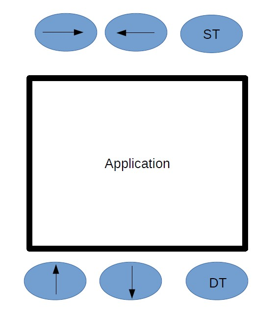

COSC Team.
James Cross 1350026
Jamesdcross@gmail.com
Java Programming Experience
Experience writing reports
Managerial skills
Organisational skills
Presentational skills
No experience with SVG, The Canvas Element, HTML 5, JavaScript, CSS
Callum Tanner 2506432
tannercallum020@gmail.com
Previous experience with HTML5, CSS, Java.
No experience with HTML5's Canvas element, JavaScript, or SVG.
Personally well organised with good communication skills and written English. Experience working in small teams in a professional environment.
Limited creative ability.
-"I'm good at solving problems. I'm bad at coming up with new creative directions."
Hussain Almarhoon 344651
silver-moon1412@hotmail.com
I have done Python, Java, C, NetBeans and I used a little bit of JavaScript in a project through the course.
English is my second language so any part with the language I will stay away from it.
Youssef Alghamdi 7266339
yo_max.alghamdi@hotmail.com
I have experience with C, CSS, NetBeans and a little with JavaScript.
Not good enough at writing reports as my English is a second language.
Good at managing stuff.
Features:
Achievable
Extra Features (may not be achievable)
The screen size of a smart watch is about 38mm meaning there is not much room; we have opted for a bottom up approach. If we start by looking at the day it would just contain active events/appointments (not every hour of the day) which should fit on one screen (no swiping needed) ideally. If the day is filled with appointments the view would be scrollable up and down to accommodate every appointment.
To enter an appointment, the same scrollable approach would be used. In this mode a more detailed display featuring each hour in the day as a block in a table which you could scroll through. Then you would tap on a block to enter an appointment.
A small back button is the main navigation tool of our calendar app. Navigating from the day display (which is likely the most commonly used display) you would tap the back button to go to week display which displays days instead of hours then months which displays weeks instead of days and so on.
For initial development and testing of our application, we will simultaneously develop an emulator that will run in a browser environment. This emulator’s primary function will be to provide the inputs for the application so that we can make the application without restricting the functions to any particular platform. It will also act as a way to call the application within the web browser without directly interaction between the app and browser, as well as supply the information that would otherwise come from the watch.
The application will handle:
By contrast, the emulator will provide:
To help demonstrate this division, when called in the browser, the emulator will display as shown in the diagram below:
In researching other smart watch apps, we found that different views for day, month and year are pretty standard. Changeable themes and alerts are also a common feature. Displaying events that can be viewed at a glance is key. We also researched why anyone would in fact want a smart watch. The primary reason seems to be the fact it does not intrude on a conversation or business meeting. Like looking at a “bulky” phone would. So efficiency and ease of use is the name of the game.
For our version control system, we have decided to use GitHub. The main reason is, that some of us already have experience with GitHub. This means that teaching the other members is easier, rather than everyone on the team trying to learn a new system. Also GitHub offers a series of features that make it a good choice for version control. Including the ability to regulate which collaborators can access the repository, automatic changelog creation and dynamically editable files. GitHub is widely used in the industry; this means that learning it now puts us at an advantage for employment.
Nowadays, there are a multitude of languages for JavaScript development. After a bit of searching, we have decided to use Dart. Our group is confident that the functionality of this language will suit our purposes.
Dart takes the separation from JavaScript even further, and is a whole new language, designed from the ground up. It is a language that is not used for a browser but it is more used as a general language. Moreover, Dart can compiles into JavaScript which is the only link between JavaScript and Dart.
Dart is a broadly useful programming language that is implied for front end Web development, but can also be used to make numerous different sorts of applications. It compiles directly to JavaScript, so it can be used across all browsers and arguably, it fixes a lot of the problems that JavaScript has.
It was originally decided to use Eclipse as our JavaScript IDE. On further investigation into Reddit forums and review sites, no one seems to recommend Eclipse for JavaScript. Its many faults include incorrect code diagnostics and a lack of code folding with very slow start up. We then looked into Webstorm as an alternative, which I think we should try as it is recommended highly. However it does seem like it might have a steep learning curve. Netbeans may be the best option for us at this time as some of us already have experience with it.
The reason we chose Firebug is because it allows us to edit, debug, and monitor CSS, HTML and JavaScript live in any web page. Also and more importantly it quickly finds the errors when things go wrong and immediately gives you detailed and useful information about the errors in JavaScript, CSS, and XML. In addition, Firebug has a better and cleaner interface for editing HTML and CSS over Chrome.
These roles are flexible as all team members will assist with coding/debugging as needed.
Whole Team: 07/04/2016 – 21/04/2016
Hussein, Yousef (with help) 14/04/2016 - 30/04/2016
Hussein, Yousef (with help) 01/05/2016 - 14/05/2016
James 10/05/2016 – 22/05/2016
23/05/2016
Assignment 1 : James 07/04/2016 – 12/04/2016
Assignment 2 : James 09/05/2016 – 15/05/2016
Assignment 3 : James 04/08/2016 – 10/08/2016
Assignment 4 : James 26/09/2016 – 05/10/2016
Hussein, Yousef (with help) 24/05/2016 – 12/06/2016
Hussein, Yousef (with help) 13/06/2016 – 13/07/2016 (if there is time)
James 9/05/2016 – 15/05/2016 (on-going)
We evaluated the costs for Auckland as that is the main business hub in New Zealand. The budget provided below has been calculated on a one-week basis.
| Accommodation | $165.00 |
| Power | $15.10 |
| Groceries | $60.10 |
| Transport | $40.85 |
| Clothes | $13.60 |
| Takeaways | $15.65 |
| Leisure | $31.60 |
| Toiletries/beauty/makeup | $8.30 |
| Phone/internet | $10.00 |
| Cellphone | $7.50 |
| Weekly total | $367.70 |
After some investigation in to renting a modest Office space it is surprisingly cheap, $230 per week to rent an Office space (really just a large room) with furnishings, power and internet provided:
https://www.office-hub.co.nz/listing.aspx?SurgaWebListingId=108515There are two ways to go when renting computers. The expensive way is to buy new mid-range iMacs (2.8GHz Processor 1TB Storage) for $2,399. The advantage of this is they come with a lot of useful software and they also obviously give you native access to the mac operating system. However the more affordable option is to buy second hand PC’s. You can get a pretty powerful second hand PC for $800 – $1200 on trade me. I guess this depends largely on what platform you are designing your app for. You could also pick up an older model iMac say 2011 for around $800 on trade me.
Visiting a few websites led to some interesting results on how much a software developer might actually get paid. Some sites estimate $65,490 per year, others 55,000 to 182,000 a year. As we would be a small start-up we estimate around $40,000 a year is probably more realistic.